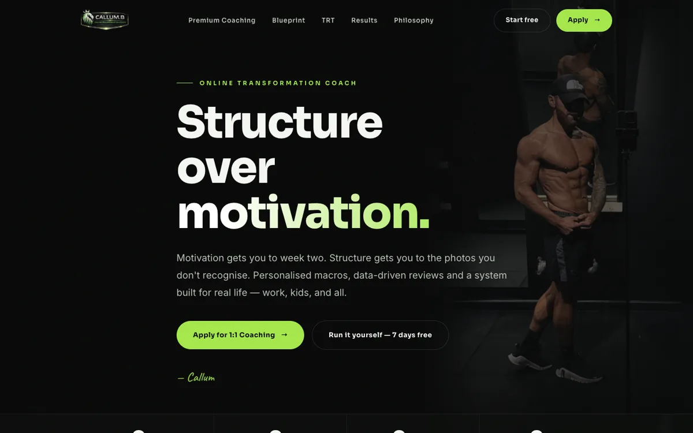
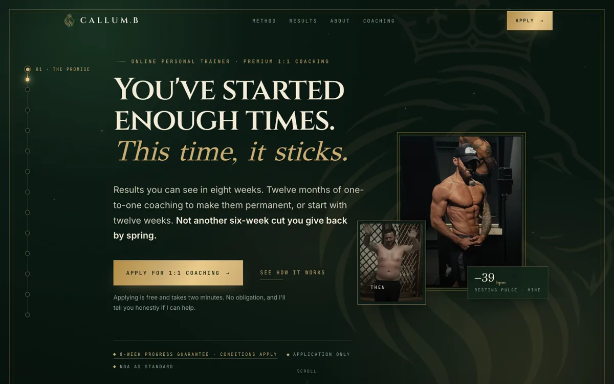
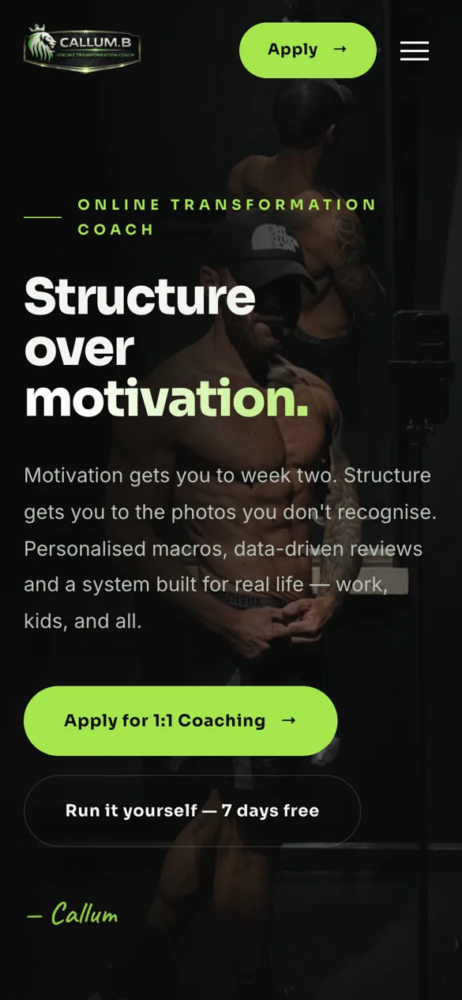
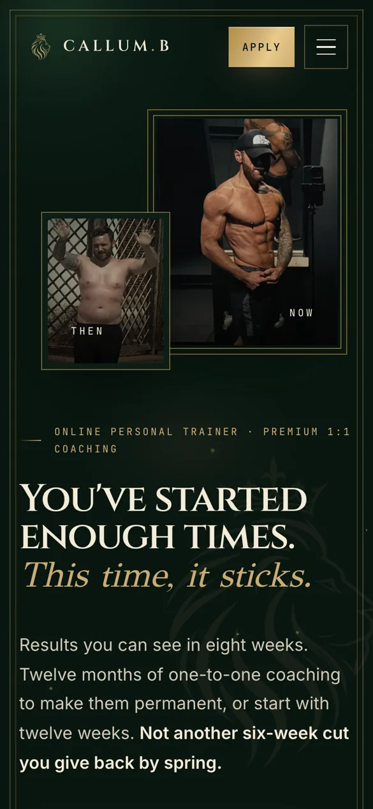

My first job: D & P Roofing.
Roofers and builders in Westhoughton, near Bolton, with 30 years on the tools and 5.0 from 142 reviews on Which?. Here's what I found, and what I built.
Before and after.
Scroll and the new site wipes across the old one.
 Their current site
Their current site
 The new site
The new site
 Current
Current
 New
New
What changed.
They already had more reviews than any local rival I checked. The website just wasn't showing it.
| Their current site | The new site | Why it matters | |
|---|---|---|---|
| Tap to call | The number shows but can't be tapped | A Call button always on screen | Someone with a leak rings the first firm they can reach |
| None | One tap, with a ready-written message | Customers send photos, so jobs get priced faster | |
| Reviews | 6 testimonials, no score | 5.0 from 142 on Which?, up front | Independent proof sells before the phone is picked up |
| Price promise | Not mentioned | "The price we quote is the price you pay" | Homeowners want to know the price won't creep |
| Photos of their work | A few; the gallery showed none | Over 20 of their own jobs | Real roofs build trust |
| Speed on a phone | 1.2 seconds to load | 0.6 seconds to load | About half the time, so fewer people give up |
| Found as the local firm | "North West", no business details for Google | Their Westhoughton address and areas, set out the way Google reads them | Helps them show up in local searches |
| Quote requests | A form on the contact page | Name, phone, job and postcode, straight to WhatsApp | Every enquiry arrives ready to call back |
Checked 20 and 21 October 2026. Load times measured on a phone-sized screen with a fresh cache, faster of two runs.
Against the local competition.
Before building anything, I read the websites of five local roofers a customer would compare them with.
- Price promise
- D & P's new site is the only one of the six that promises the price won't creep.
- Reviews shown
- 142 on Which?, the highest review count of the six. Two of the five competitors show no review count at all.
- Building too
- The only one that covers building and groundworks as well as roofing.
- Guarantee
- 10 years on re-roofs, shown up front. Only one of the five competitors states a guarantee.
- Speed
- 0.6 seconds to load on a phone, faster than four of the five.
From each firm's own website, read 21 October 2026. I don't name the other firms here.
How I did it.
Read their site
Every page, their reviews, their photos and their socials.
Checked the competition
Five local roofers, the same facts recorded for each.
Built to beat them
From their own job photos and their Which? reviews, phone first.
Wrote it up
A plain-English report: old site against new, and why each change matters.
No results to show yet. I'll publish real numbers when there are some.
D & P are my first case study. I built their new site free, as a demo. It's ready to go live on their own address. The roofers page puts this work in context.
Next, they've asked for an out-of-hours assistant: emergency enquiries at night get an instant reply that takes the details and photos, so the job is waiting for them in the morning.
CALLUM.B: my own coaching business.
Online personal training for men over 30. I rebuilt its website in October 2026, the same way: read the old site, find what wasn't working, then build to fix it.

The old site
The new site
Old
NewWhat changed.
Different business, same idea: make the one thing you want people to do obvious, and prove it.
| The old site | The new site | Why it matters | |
|---|---|---|---|
| The offer | Several products side by side: an app, a 90-day programme and a TRT framework | One offer: 1:1 coaching for men over 30 | Visitors know straight away what they're applying for |
| Guarantee | None shown | The 8-Week Progress Guarantee, up front | Takes the risk out of the first step |
| Proof | 4 images on the results page | 22 on the results page, and Callum's own before and after on the home page | Real results do the selling before anyone applies |
| Getting in touch | An apply page | An apply form on four pages, plus WhatsApp | Ready to apply? You can, wherever you are on the site |
Checked 22 October 2026 against a saved copy of the old site. The new site went live in October 2026, too soon for numbers, so I won't quote any.

Want the same for your business?
Book a free 30-minute callNo obligation. You talk to Callum.